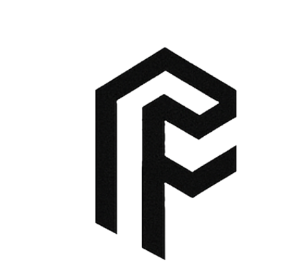

Impossible FibersEssays and research papers from Impossible Fibers. Where an essay and papers are about the same work, they share a dot on the line.
Data: fiber mat images, bundle images, mechanical tests
Data: bundle images, tensile tests